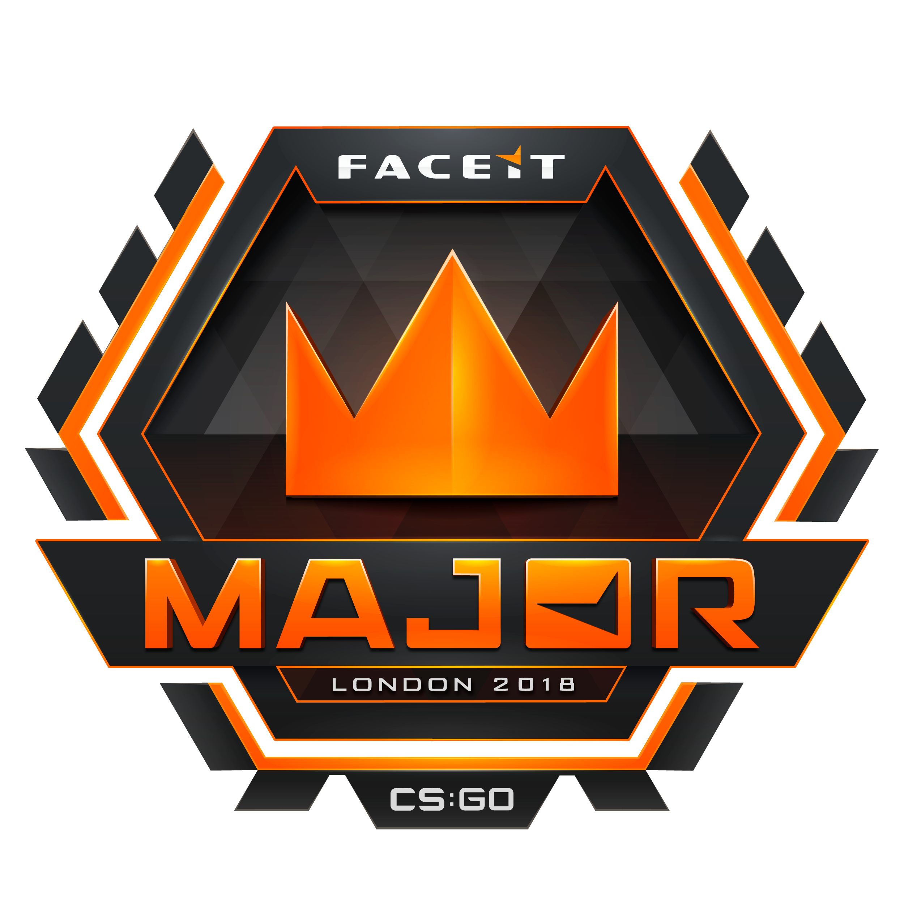
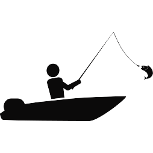
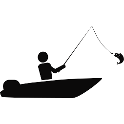

Gamen
Een Grote hobby van mij gamen. En dan voornamelijk de game Counter-Strike Global Offensive. Dit is een competitive First Person Shooter. Waar bij je 5 tegen 5 speelt.Het is niet alleen de game dat me intresseert maar ook de competitive side van Counter-Strike Global Offensive.Ik ben naar meerdere LANs geweest om zelf competitive Counter-Strike te spelen. Op 20 September van dit jaar ga ik ook naar het grootste Counter-Strike Toernooi ter Wereld dit is in het Wembley Stadion in Londen. Ik doe zelf niet mee maar kom er wel om de top teams tegen elkaar de strijd aan te zien gaan.


Vissen
Een andere hobby van mij is vissen. IK vis voornamelijk hier in Friesland. Op verschillende soorten vis ik vis het liefst op roofvissen, denk hierbij aan snoek, baarsen en meerval.Het leukste aan vissen is dat je nooit weet wanneer je beet kan krijgen. Dit maakt het dan ook erg spannend iedere keer als je je hengel ingooit. Een ander aspect aan vissen is ook de rust. En vooral als ict-er ben je vaak 24/7 met computers bezig. Dan is het ook wel even fijn om er niet meebezig te zijn en gewoon je hoofd leeg te maken.
 
